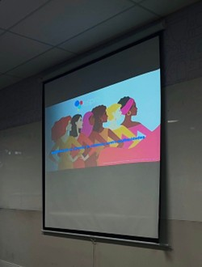
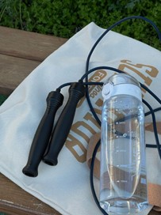
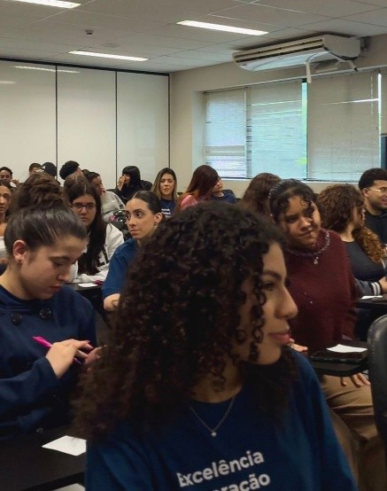
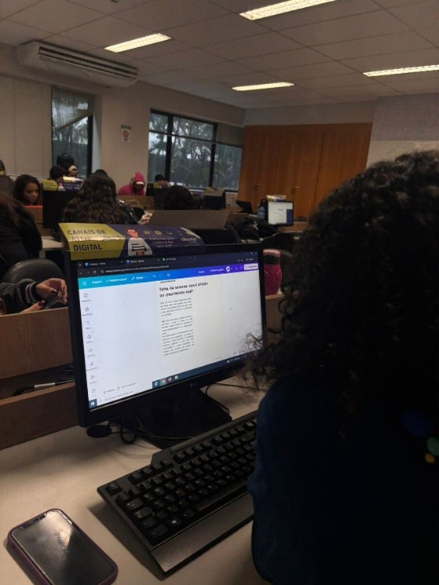

Saúde e Esporte
Corpo e Mente em Dia

Política
Enfrentamento à Violência Contra Mulheres: Espro na Luta
Palestra apresentou recursos e redes de apoio disponíveis no município.

Política
Guia de Serviços Para Mulheres é Distribuído no Programa
Material da Prefeitura de SP informa sobre rede de enfrentamento à violência.

Saúde
Pequenas Atitudes que Fazem Grande Diferença
Beber água, se alongar, dormir melhor — como criar hábitos saudáveis.
Saúde
Equilibrar Trabalho, Estudos e Vida Pessoal
Quando a gente entra no mercado, surgem novas responsabilidades. Cuidar da saúde precisa fazer parte da rotina.

Política
Janeiro Branco e Setembro Amarelo no Espro
Campanhas abriram diálogos sobre saúde mental, bem-estar e construíram um ambiente mais acolhedor.

Política
Conscientização que vai além da Sala de Aula
Discussões sobre direitos e cidadania são importantes dentro e fora do programa.